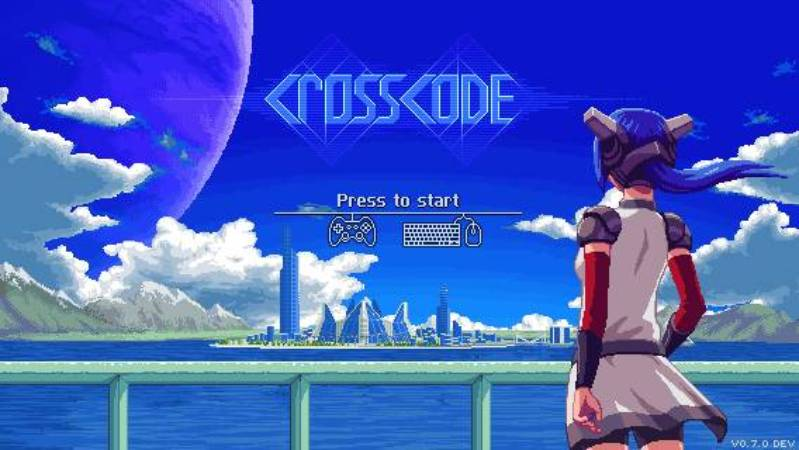
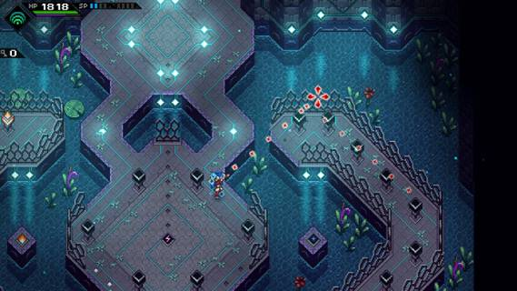
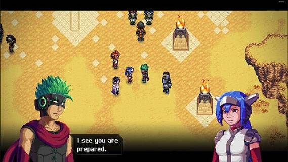

 
Game Categories
- Genre: Role-Playing (RPG)
- Setting: Sci-fi / Futuristic
- Visual: 2D Scrolling
- Art: Anime / Manga
- Gameplay: Action RPG, Puzzle elements
Description
This retro-inspired 2D Action RPG might outright surprise you. CrossCode combines 16-bit SNES-style
graphics with
butter-smooth physics,
a fast-paced combat system,
and engaging puzzle mechanics,
all served with a gripping sci-fi story.
CrossCode is all about how it plays!
Take the best out of two popular genres, find a good balance between them
and make a great game. That’s what CrossCode does. And it works pretty well.
You get the puzzles of Zelda-esque dungeons and are rewarded with the great variety of equipment
you know and love from RPGs. During the fast-paced battles you will use the tools you find
on your journey to reveal and exploit the enemies' weaknesses and
- at the same time - you will be able to choose equipment and skills for a more in-depth
approach in fighting your enemies.
Review
It might have taken a long time to arrival in its full form, but the developers have made the wait worthy. This a title that superbly captures its inspiration of early 1990s games, but modernises it through design and mechanics. CrossCode is a fantastic package that sits as one of 2018’s best indie games. In a year that launched Celeste, Dead Cells and Into the Breach, it’s no easy award to give, but CrossCode achieves this thanks to its great action RPG gameplay set in a believable MMORPG world, beautiful visuals, additive, responsive and challenging combat, smart dungeon design and some wonderful music. It’s a complete package that is bold enough to take the clichés of the genre and run with its own spin on them, and it isn’t going to burn holes in anyone’s pockets with its nicely priced £14.99, which gives players a lot of bang for their buck, top quality bang at that.
-- DarkZero Review